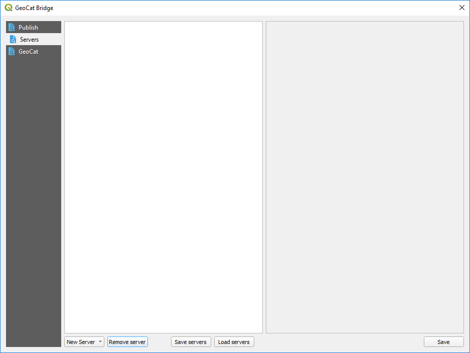
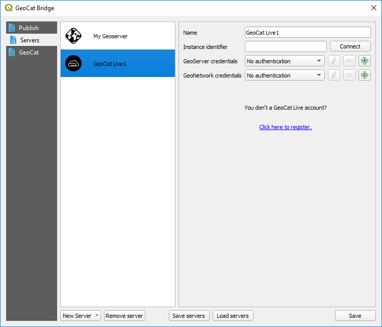
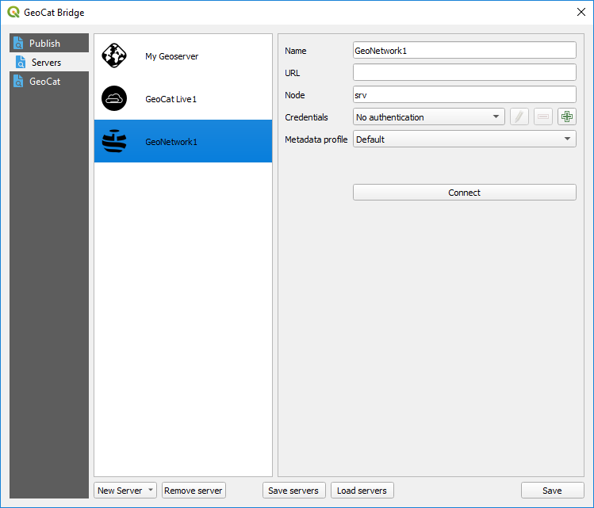
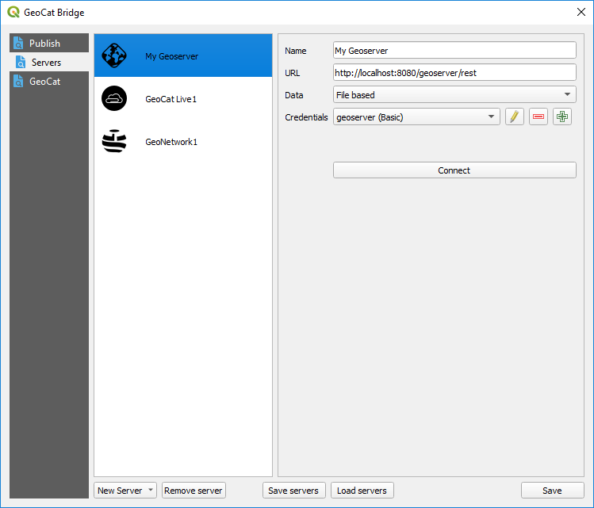
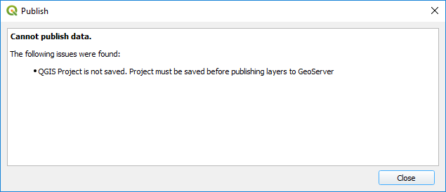
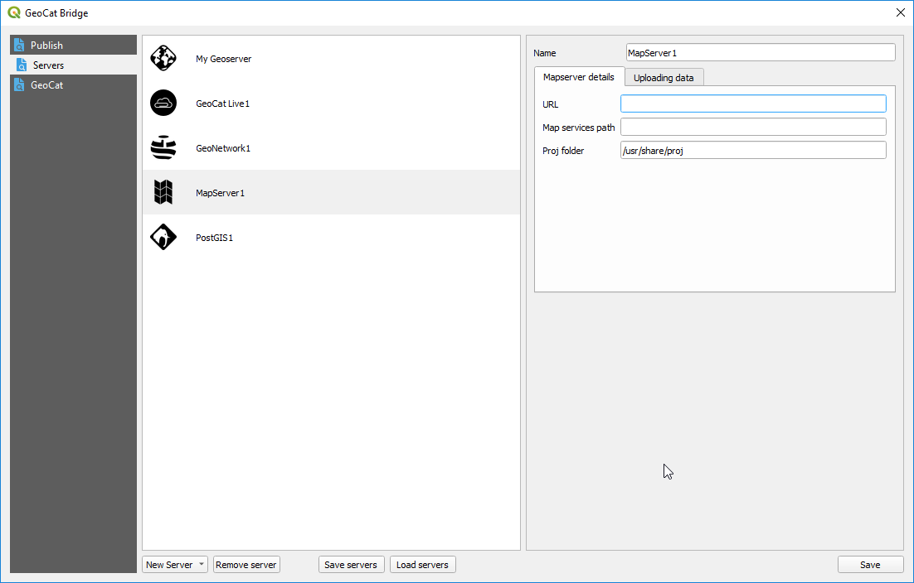
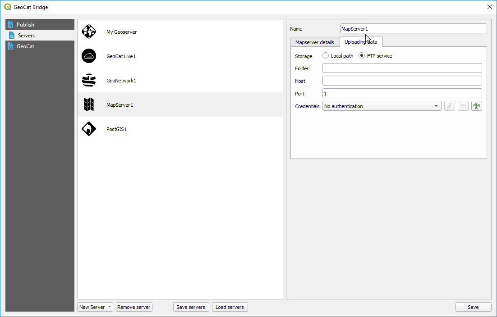

Server Connections¶
Configure your server connections to publish your data and metadata to. To do it, move to the Servers section of the Bridge dialog
Add new connection¶
Click New Server and choose one of the supported server connection types to create a new server:
GeoCat Live
GeoServer
MapServer
PostGIS
GeoNetwork
Fill the required parameters and then click on the Save button to save the server. You can edit the parameters of a given server at anytime, just selecting its name, changing the corresponding values and then clicking on the Save button.
Below you can find more detail about the different types of services and connections supported in Bridge.
GeoCat Live¶
GeoCat Live is a SDI platform hosted by GeoCat. Depending on your GeoCat Live configuration Bridge is able to publish metadata to a catalogue server (CSW) and the layers of the map to a mapserver (WMS/WFS/WCS/WMTS). Components used
To configure a GeoCat Live connection, enter your Live id and a name for the server. You can then click on the Connect button to verify that Bridge can connect to the Live instance and retrieve the URLs of the associated data and metadata servers.
When you add a Live server, two new servers will be added to the list of available ones in the Publish section: a geodata server and a metadata server.
You don’t need to supply the URLs of those servers (as it would be the case if you wanted to manually add each of them), but you must supply their credentials.
GeoNetwork server¶
Configure a GeoNetwork connection to publish your metadata to an online catalogue.
You must enter a name the URL of the server and the corresponding credentials (with publish permission)
Click Connect to test the server connection.
GeoServer connection¶
Configure a GeoServer connection to publish your data to GeoServer.
Provide a name for the server, its URL and the corresponding credentials.
URL can point to theGeoServer location (i.e. http://localhost:8080/geoserver) or the REST API endpoint (i.e. http://localhost:8080/geoserver/rest)
Finally, you must select how data will be stored in the server. Three different methods are available:
File based. Files are uploaded to GeoServer and stored in the GeoServer instance.
Import into a PostGIS DB (handled by Bridge): You must select a PostGIS server to import your data into it. PostGIS servers are defined in the Servers section of the Bridge dialog as well, as explained later on in this same chapter. Your layer data is imported into the PostGIS server, and no data is uploaded to GeoServer. GeoServer layers are created pointing to the table that has been created in the selected PostGIS DB, which contains the layer data.
Import into a PostGIS DB (handled by GeoServer): Layer data is uploaded to GeoServer, and GeoServer itself takes care of importing into the DB. A PostGIS DB must be selected from the datastores available in the GeoServer instance. If you want to add a new one, use the Add datastore button.
When you add a new GeoServer server, Bridge will automatically add the corresponding WMS and WFS endpoints to QGIS, so you can easily add to your project the layers that are available in the server.
Bridge and GeoServer workspaces¶
Layers will be published to a workspace with the name of the current QGIS project. If you are trying to publish layers and your current project is not saved yet, you won’t be able to start the publication process. A warning message will be shown.
If the workspace exists, it will be deleted before publishing, so its content after publishing will be just the selected layers and its symbology. If the Only symbology option is selected in the publish section, no data is removed before uploading the symbology of the selected layers.
PostGIS connection¶
Configure a PostGIS connection to publish your map data to PostGIS. The PostGIS connection can be used in two different publish scenarios:
Publish only map data to PostGIS
Publish map layers to GeoServer and store data directly in PostGIS using a direct database connection (as explained in GeoServer connection)
MapServer connection¶
Configure a MapServer connection to publish your map data to PostGIS. A mapserver endpoint (mapfile) is created for each QGIS project.
In the MapServer details enter the information about your MapServer instance, to which you want to publish.
In the Uploading data tab configure how Bridge stores data for your MapServer connection. Choose Local path to store the files in a location on the local file system. Choose FTP service to transmit the files over FTP to the MapServer server. Depending on which option is selected, you will see additional parameters to configure
